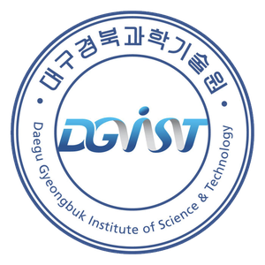
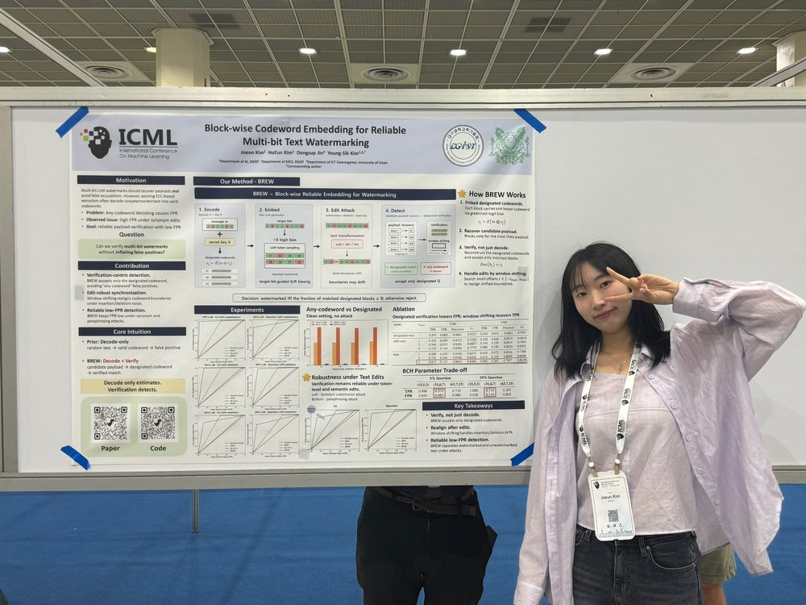
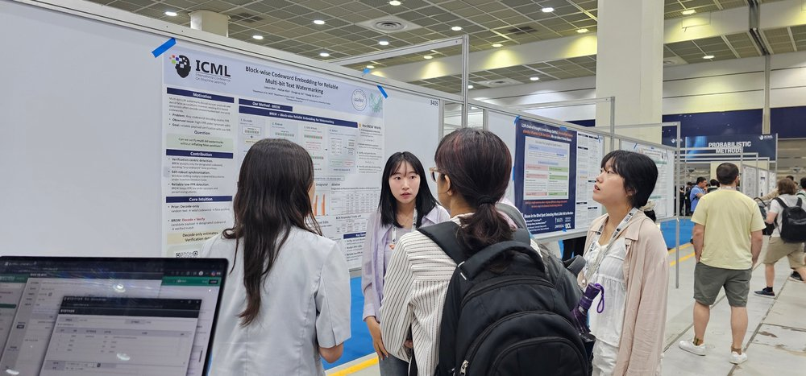
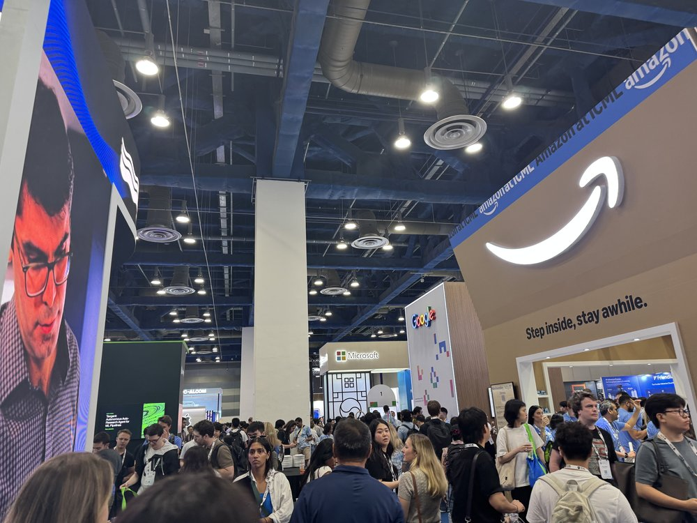

Compression Asymmetry and Trajectory Binding in Noise-Anchored Diffusion Inversion
Once a seed, now a sprout. A security researcher working across AI, communications, and vehicle security.
I'm an M.S. student in the Department of Artificial Intelligence at DGIST, working in the PAC Lab under Prof. Young-Sik Kim. I finished my B.Eng. in AI Convergence at the University of Ulsan, and my work sits at the meeting point of machine learning, communications, and security.
My work is in security research — and within it, three areas in particular: AI security, communications security, and vehicle security.
Reliable multi-bit watermarks that survive paraphrasing and editing. My work reframes extraction as designated verification (BREW) and adds calibrated soft-decision decoding (CORE-BREW) to drive false positives down without sacrificing detection power.
Protecting meaning, not just bits, at the wireless edge — using context asymmetry, metadata camouflage, and prior restoration to secure 6G edge networks without heavy negotiation.
A unified LLM-based intrusion detection system that reads both Automotive Ethernet and CAN traffic, bridging heterogeneous protocols through protocol-specific semantic extractors and multi-modal pre-training.

DGIST · Daegu, Republic of Korea
PAC Lab, advised by Prof. Young-Sik Kim. Research on LLM watermarking, semantic security, and in-vehicle network security.
University of Ulsan · IT Convergence, College of Engineering


